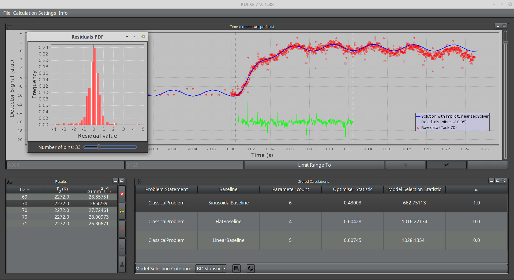

Processing Unit for Laser Flash Experiments
Current Stable Version: 1.93
PULsE allows effective treatment of raw data generated in laser flash experiments where conditions may not be ideal for simpler analysis.
PULsE analyses the heating curves, calculates and outputs the thermal properties of the sample, such as the thermal diffusivity, based on the inverse solution of a heat transfer problem. The software is specifically tailored for use in the
Materials Research Facility at UKAEA, and reads standard ASCII files generated by the Linseis LFA systems; it was initially designed to read custom file formats from a different apparatus designed
at the Moscow Engineering and Physics Institute. It is therefore inteded for use with any LFA instruments as an alternative to the standard, often simplistic software.

A user manual is available.
Example input files include: heating curves for a reference tungsten sample, the master .lfr file, and a metadata file.
You can download sample datasets here: Tungsten (Linseis format) (.lfr), Pyroceramic Standard (Kvant format) (.dat) and Transparent Alumina (Kvant format) (.dat). Extract the contents of the archive and be ready to load those files using the PULsE menus.
If you've used PULsE for data processing, please consider citing the following papers:
- Lunev, A., & Heymer, R. Decreasing the uncertainty of classical laser flash analysis using numerical algorithms robust to noise and systematic errors.
Review of Scientific Instruments 91, 064902 (2020) (a preprint is openly available at arXiv:1910.07499)
- Lunev, A., Zborovskii, V., & Aliev, T. Complexity matters: Highly-accurate numerical models of coupled
radiative-conductive heat transfer in a laser flash experiment. International Journal of Thermal Sciences, 160 (2021) 106695. (open access)
- Lunev, A., Zborovskii, V., Aliev, T., Heymer, R., & Vilkhivskaya, O. PULsE: An open-source software for laser flash analysis. Software Impacts, 6 (2020) 100044.
This software has been written in Java 11 and requires the corresponding virtual machine to run. A javadoc is available with information
on what Java classes and methods it contains, including specification of data formats.
Main features of PULsE:
- Calculates the time-temperature profiles for the laser flash experiments by solving heat transfer problems with high-accuracy finite difference schemes and numerical solvers
- Solves the reverse heat conduction problems by using advanced numerical optimisation techniques
- Ability to fully customise the optimisation procedure by adjusting the number of search variables and fitting domain
- May re-construct missing data, e.g. due to detector failure or electronic circuit overheating
- Capable of correcting systematic errors e.g. due to incorrect pulse timing
- Uses statistical helpers to facilitate and enhance data analysis
- Provides an easy to use, light-weight graphical user interface based on Swing and JFreeChart
- Automatically estimates the available computing power and tries to use multi-threading for batch processing of tasks
- Plots interactive heating curves for the user to adjust the calculation domain and to check the quality of fit
- Manages results with dynamically-adjustable format; capable of auto-merging resuts and calculating standard errors on-the-fly
- Comprehensive logging that can show both intermediate execution steps and time events
- Ability to export data in html or csv format
Problem statements supported in this version:
- Classical One-Dimensional
- Classical Two-Dimensional
- 1D - Nonlinear heat losses
- Distributed Laser Absorption
- Diathermic Model
- Participating Medium (fully coupled radiative-conductive heat transfer)
Advanced statistical toolkit includes:
- Normality tests (Kolmogorov, Anderson-Darling)
- Correlation tests (Spearman, Pearson)
- Model selection via AIC and BIC statistics
- Outlier-robust optimisation via Least Absolute Deviations (LAD)
PULsE is distributed under the Apache 2.0 license.